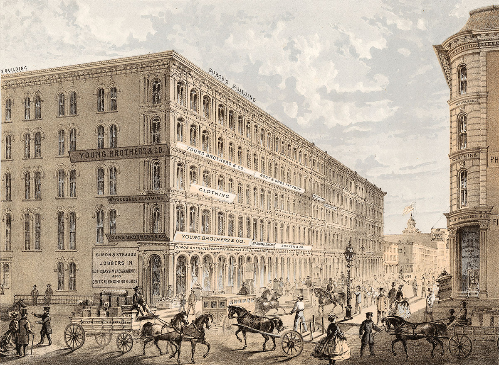
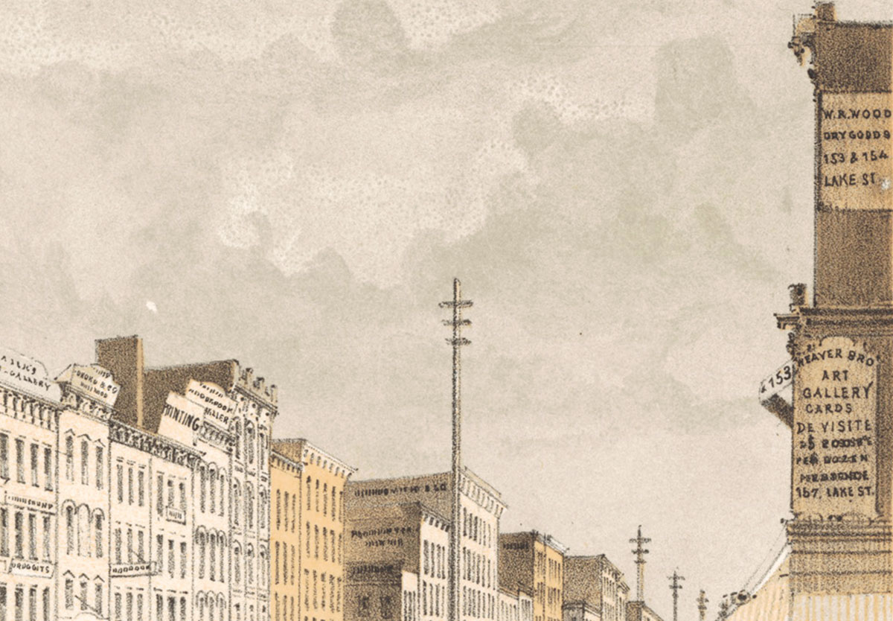
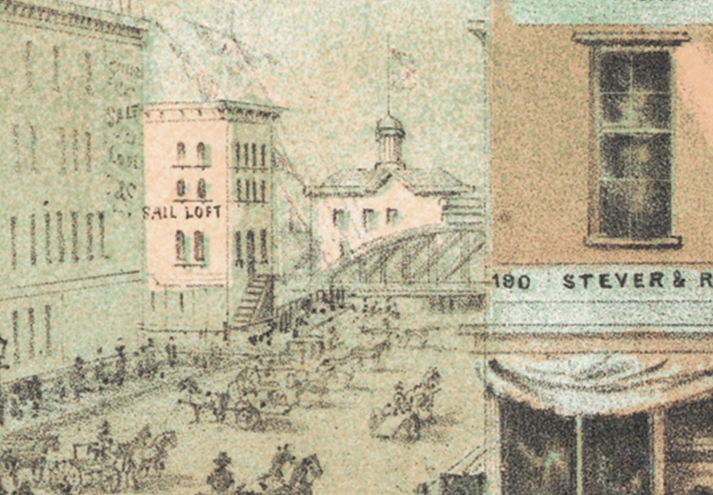

Tour Neighborhood Churches
See how Chicago’s magnificent churches rival those in Europe.
Rush Street Bridge
-

Wabash Avenue Methodist Church
This handsome church stands at the northwest corner of Wabash Avenue and Harrison Street in a comfortable residential area just south of the central business district. After Sunday church services, residents can be seen taking a leisurely stroll or carriage ride.
iChi-63096
-

Church
This church, designed by Chicago architect William W. Boyington, was completed just before the Financial Panic of 1857, leaving the congregation deeply in debt. Its members, however, are making great strides in paying it off.
iChi-63097
-

Residential area
An increasing number of Chicagoans are choosing to move away from the congested central city to more comfortable residential areas, like this, with tree-lined streets.
iChi-63098
Church of the Holy Family
-

Church of the Holy Family
Located southwest of Chicago’s central business district, the Twelfth Street Bridge spans the South Branch of the Chicago River. It is lined with huge grain elevators and lumberyards, which store valuable commodities from across the region.
iChi-63090
-

South Branch
Rising from its headwaters, the South Branch of the Chicago River flows north, joining the North Branch at Wolf’s Point to create the river’s main stem, which empties into Lake Michigan. Industrial growth makes the South Branch dirtier every year.
iChi-63091
-

Massive amounts of Midwest grain and lumber are shipped to Chicago and stored for sale and distribution. This stimulates Chicago’s economy but has turned the once peaceful stream into a dirty, industrial corridor.
iChi-63092
North Presbyterian Church
-

North Presbyterian Church
Recently installed, the new Chicago Crib is a massive structure made of wood and iron. It is forty feet high and rests two miles offshore in thirty feet of water. Numerous ships pass by, carrying goods to and from Chicago.
iChi-63093
-

Chicago Crib
When fully operational, the crib will collect fresh drinking water and send it through an underground tunnel to a pumping station under construction on Michigan Avenue. The fresh water will help reduce the spread of cholera, which killed nearly 2,000 people in the 1850s.
iChi-63094
-

Ships
Hundreds of ships sail in and out of Chicago every day. Lake Michigan is a natural gateway to regional, national, and international markets.
iChi-63095